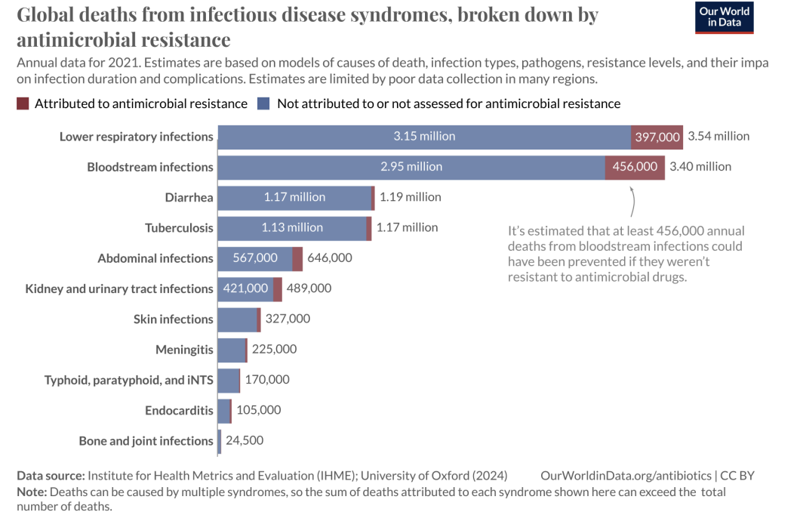
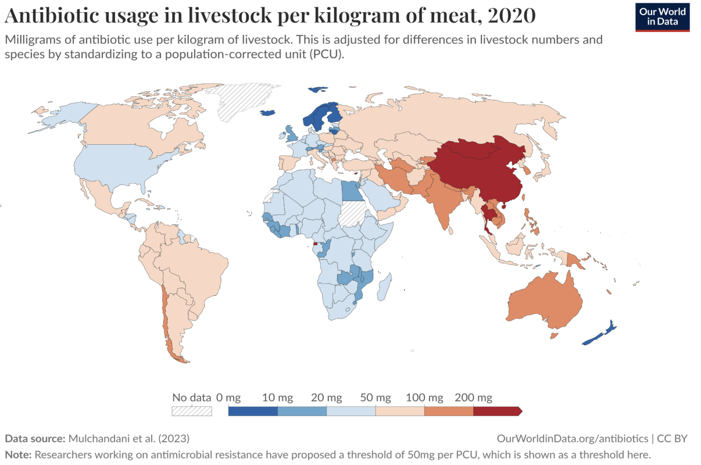

Biology • Medicine
Antimicrobial resistance - What is it? And why should you care?
Antimicrobials (AM), which include antivirals, antifungals or antibiotics, are medicines used to treat and/or prevent infections.
Antimicrobial resistance (AMR) is a phenomenon that occurs when pathogens, such as bacteria, viruses, or fungi, mutate or adapt in a way that allows them to develop the ability to resist the effects of antimicrobial agents, resulting in the inefficiency of the medicine and making infectious diseases harder or impossible to treat under the selective pressure of antibiotics. Susceptible bacteria are killed or inhibited, while bacteria that are naturally (or intrinsically) resistant or that have acquired antibiotic-resistant traits have a greater chance of surviving and multiplying.
AMR causes an increase in several diseases’ spreadability and the risk of severe illness, disability or death.
Significance
AMR was identified by WHO as one of the top global public health and development threats. A study from the Global Research on Antimicrobial Resistance (GRAM) estimated that in 2019, 4.95 million people died from drug-resistant infections and, of those, 1.27 million were directly caused by AMR. AMR also puts many of medicine’s advances at risk: AMs are essential in procedures such as surgery, caesarean, or chemotherapy, and the AMR substantially increases their risk factor. (Figure 1)

Figure 1
This problem impacts all countries at all income levels, although it has a higher incidence and a higher burden level in low-resource settings, with the Sub-Saharan region presenting the highest rate of AMR burden, 23.7 deaths per 100,000 people. AMR also has a larger impact on neonatal and especially older age groups, where mortality related to AMR increased by 80% from 1990 to 2021 in adults 70 years old or over. This issue has tended to grow over time as, although AMR mortality decreased for children younger than 5 years in all super-regions, AMR mortality in people 5 years and older increased in all super-regions. An analysis by EcoAMR predicted that, if left unattended, AMR could lead to 39 million human deaths between 2025 and 2050.
AMR is exacerbated and accelerated by human misuse. The excessive prescription of antibiotics by general practitioners, even in the absence of appropriate indications, self-medication, and incorrect dosage/schedule of antibiotics, are the main contributors to AMR. In many developing countries, excessive use is due to the easy availability of antimicrobial drugs that can be acquired without a prescription from a professional. In the hospital setting, the intensive and prolonged use of antimicrobial drugs is the main contributor to the emergence and spread of highly antibiotic-resistant infections.
A substantial proportion of total antibiotic use occurs outside the field of human medicine. Antimicrobial use in food-producing animals, aquaculture and agriculture for growth promotion and for disease treatment or prevention is a major contributor to the overall problem, as AMR genes have become increasingly abundant and diverse in these contexts. These practices are encouraged by the growing demand for resources, as a great part of the world population still experiences food insecurity and famine. (Fig. 2)

Figure 2
The spread of drug-resistant pathogens is also linked to sanitation. Contamination of municipal wastewater due to incomplete metabolism in human beings or incorrect disposal of AMs allows for the proliferation of antimicrobial-resistant microbes, such as tetracycline and sulphonamide-resistant bacteria and sulphonamide-resistant genes. Consequently, the lack of proper sanitation, poor water quality, and inadequate wastewater treatment are contributing factors to AMR, leading to a higher burden in low-income areas.
Further impact
This problem has also been shown to take a big toll on the economic level. AMR results in extended hospital stays, more difficult and expensive treatment and loss of workforce for longer periods of time, which places a bigger financial burden on the family and community, as well as in the healthcare system. AMR also causes loss of productivity in livestock production and agricultural efficiency. A study conducted by EcoAMR found that, if no action is taken in 2050, the healthcare costs of AMR could rise to US$159 billion, and the impact on livestock production could reach US$40 billion globally.
Plan of action
Presently, many initiatives are being taken by global organisations and stakeholders. For example, WHO published a Global Agenda for Antimicrobial Research in 2023, guiding policy-makers and researchers in generating new evidence to inform antimicrobial resistance policies and interventions as part of efforts to address antimicrobial resistance, especially in low- and middle-income countries. But there is still a large journey ahead. Some of the most pressing measures to be taken are as follows:
- Education of the broader public about the proper use of antibiotics and imposing stricter regulations on prescription by medical professionals
- Improving safe disposal systems of antibiotics
- Monitoring and restricting the use of AMs in animal farming
- Improving infection control in healthcare settings
Bibliography - To learn more!
- WHO (2023) Antimicrobial Resistance https://www.who.int/news-room/fact-sheets/detail/antimicrobial-resistance
- Michael, C. A., Dominey-Howes, D., & Labbate, M. (2014). The Antimicrobial Resistance Crisis: Causes, Consequences, and Management. https://doi.org/10.3389/fpubh.2014.00145
- Uchil, R. R., Kohli, G. S., Katekhaye, V. M., & Swami, O. C. (2014). Strategies to combat antimicrobial resistance. https://doi.org/10.7860/JCDR/2014/8925.4529
- Naghavi, M., et al. (2023). Global burden of bacterial antimicrobial resistance 1990–2021: a systematic analysis with forecasts to 2050. The Lancet, Volume 404, Issue 10459, 1199 - 1226